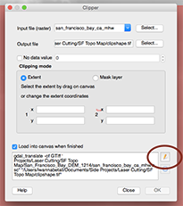
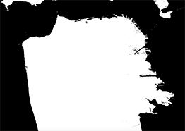
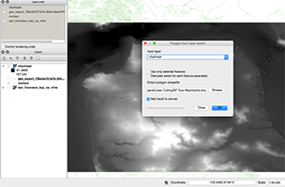
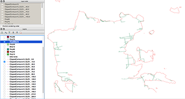
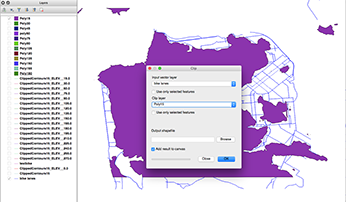
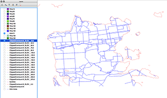
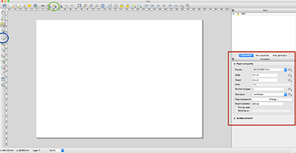
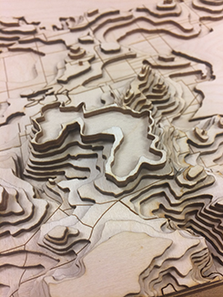
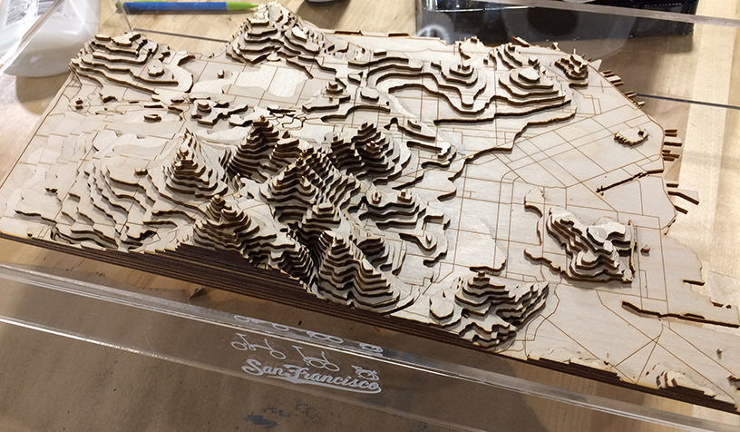

So I stumbled upon this guy's laser cut topographical map of Portland, Maine, really wanted one of SF and googled how much these things cost to own...and decided nope. I wanted to make one of SF to see how steep the hills that I "biked" this summer were...except the end product just made me terrified of the parts of SF that were taller than the little nubbins that I half-biked/half-pushed my bike up.
Portland guy does a good job detailing his steps, so I Melania'd a lot of his first 3 steps to minimize going back and forth. I diverged from his process significantly after #3/4, but rec you read his method too. (I use more QGIS at the beginning and less Illustrator, whereas he's the opposite. I've got a little previous GIS experience, had never used it before this.) Even though only like 3 people are going to read this in full, I've convinced myself that I'm doing this case I want to make another one in the future and I don't want to spend hours figuring out how to do this again/this is for everybody at UNC BeAM that helped me.
You already win at life if you got that hashtag.
Things Needed
Needs to be a .dem file, which has an .asc extension. We're looking for a digital elevation model (DEM), and a shapefile (.shp) of bike lanes. *FYI Shapefiles are weird and must have a .dbg and .shx file in addition to the .shp file or it won't work. Basically, just download/copy the entire thing of files associated with the shp file, ie .prj, .qpj. Don't ask me why lol.
Remember that the elevation data is a raster data type and the contour layers/bike lanes are vector data.
For screenshots on how to do this, go to Portland dude's page, or hover over the buttons on the far left and click the ‘Add Raster Layer’ button to add the dem file data (it's the checkerboard one). I just used the default coordinate reference system that popped up. It'll probly be slow to zoom/pan.
2a. Get contour lines. From the top menu bar: Raster -> Extraction -> Contour. In the window that pops up, select a path for your output file and give it a name. This will create a folder with that name and put your output contour files into it. You need to click select and type the file name in the window s.t. a path like this "Laser Cutting/SF Topo Map/Newfilename" to the file shows up.
Now set your interval between contour lines. The DEM I’m using is in units of meters, so I put in ’15’ to give 15-meter (roughly 45 ft) contour lines. Play around with different numbers and see how much detail you want. I also rec using the max elevation to how much work you want to do and how big you want it to be. In my case SF is about 280m, which gives me roughly 280/15 ~ 17-18 layers. Each piece of wood is ~ 1/4 in thick, so it was going to be a little over 4 inches tall.
**In the Contour box, make sure to: check “Attribute Name” and name the variable or you won't get any data in the file. Click ok. This step takes QGIS a little time, longer the larger your dataset is–I bet there's a way to do this on a portion of the map too.
This will also cut down on data size/speed up QGIS.
3a. With the original elevation data still open, create the shape (Idk what the proper term here is) we're clipping with. Select the Clipper tool from the top menu bar: Raster ‣ Extraction ‣ Clipper. Select extent, click the pen tool (circled) and draw a rectangle on the map of the area you want.
Step 3a will create a tif file that looks something like this:
3bi. We're going to next make this into a polygon that we can clip with. I believe the googling phrase is “clip polygon by raster". Create the polygon (outputs a .shp file) covering your raster extent. From the top menu bar: Vector -> Research Tools -> Polygon from layer extent. For the input layer: whatever you called the tif file above. Make an output file, same as we've been doing.
 3bii. Obtain the clip between your vector layer and the extent polygon. From the top menu bar: Vector -> Geoprocessing tools -> Clip
For "input vector layer", select the contour lines shapefile. For clip layer, select the polygon shpfile that we just created in 3b.
*If you aren't able to get rid of the random rect we have from clipping, I couldn't figure out how to do it other than restarting QGIS. I didn't know what to google, so if you know how to do it, let me know.
There's a tool in the Vector menu that can split a dataset based on an attribute. On the top of the menu bar: Vector -> Data Management Tools -> Split Vector Layer.
For "input vector layer", select the contour layer.
For "unique ID field", select "ELEV" or whatever you named the elevation field. Browse a folder to put them in–I rec a separate folder.
At this point, you should remove unnecessary data (mostly the original dem file and unclipped contours)–right click on the layer --> remove. You should be left with only lines inside the polygon we just clipped. You can always reload it if needed.
Add the bike lanes with just created separate contour shapefiles ("add vector layer" on left panel, above where we loaded the .dem data). Rename your layers if necessary.
Btw, you can add all at once: sort by file type, click the top .shp file, hold shift and select the last one, and click open. I used the default CRS.
To prepare for laser cutting, we're going to make the contour lines red (red = cut), but we need to make sure they're RGB 255 red.
6a. In the layer panel on the left side, right click on a contour layer --> properties.
6b. In the properties panel, click the down arrow by color (green circle) --> "choose color".
6c. In the select color panel, put in 255 for R and G and 0 for B (red circle) --> OK
Unforch, I didn't figure out a way to do this for all layers at once. It's tedious. Stream some netflix.
Repeat 6 for the bike lanes layer, but make it RGB 0R, 0 G, 255 Blue (blue = etch). *You'll have to do this for every cropped bike lane, ie repeat after step 8. More netflix to numb away the pain.
Random QGIS tip: to hide/view all layers, click the eye on the top ("manage layer visibility")
This step is a little hard to explain. Goal is to clip all bike lanes out of each layer where it will be covered by another layer on top of it. (reduces time needed for laser cutting). If you're not going to put roads/bike lanes on, you can jump ahead, but having roads/lanes will make it easier to make sure you've lined up your parts correctly.
We're going to do this by creating polygons out of each layer except the bottom one and then use the polygon for the layer that would sit on top of it to clip it and remove all the bike lanes that are in the layer above.
Example layer elevation 0 meters:
8a. Make polygon out of contour elevation 15: Vector -> Geometry Tools -> Lines to Polygons. Select contour layer for input, create output file -> OK. Use the default WGS84 CRS.
8b0. Adding this at the end of step 8 because we skip this step for the first layer.
8b. Remove the Lines you don’t need: Vector -> Geoprocessing tools -> Difference
This is for a different layer, but you should get something that looks like this. Make sure to change the bike lanes to blue.
*Step 8b0. For all future layers/higher elevations, we'll need to clip the bike lanes with the contour layer's corresponding polygon to fit within each contour layer. You must clip with the polygon or you'll get whatever bike lane pieces that cross over the contour line (ie a couple dots at best).
You should get something that looks like this. Repeat step 8b. Repeat for all layers as necessary.
Need to remove extra bike lanes (difference with polygon of higher elevation)
To minimize chances for error, I recommend that you fit (clip) all bike lanes within their respective contours first, then remove all lines (difference) all lines that would get covered by the stacked layer.
In general, clip with polygons when you want the vector in shape of the polygon. Difference with polygons when you want the vectors of only what you can see once you layer polygon on top.
We're going to be saving each contour-bike layer as its own SVG file.
9a. Pan and zoom such that the area fills your screen and jot down the scale (green) for the future case you need to go back and remake a layer. Click new print composer. It'll open a new window.
9b. In the composition (red box), change the preset to custom. Change to inches. Pick a size for your map–I did 32 x 18 inches. 9c. Click new map (blue circle). Draw a rectangle the size of the canvass. Go back to the red square and select the item properties tab (next to the composition tab). Scroll to "Position and Size" and set the X and Y to be 0 mm, and the width and height to be whatever you set your canvas size to, but in mm (ah if only we did the metric system). For me, I had 812.8 mm x 457.2 mm. Jot down the scale under the top panel, "Main Properties". I used 19942.
Click the "export as SVG" button (green circle) and ignore the warnings haha.
9d. Next layer: Switch back to the QGIS (command + ~ on a mac). Uncheck the layer you just saved as an SVG, and select the elevation and bike lanes. Be careful to not scroll or you'll have to reset your scale. Cmd-tilda back to the same print composer canvas, click new map (blue circle) and repeat 9c. If the scale on the 2nd layer doesn't match the first layer, paste in the scale (19942 here), and click update preview. Export as SVG.
*Do all your layers at the same time or you'll have to manually resize them, ie do it all over if you can't remember the scale.*
For the layers with no bike lanes:To make sure that I knew which piece to stack the next random piece on and where within the layer, I exported the contour layer for the elevation below the layer of interest as well (you might need to delete some random scraps). This will give you an extra thin trace around your layer to add that can function as a stencil. Probly better ways out there, but this is the best I could think of.
Select all and change stroke weight/thickness to 0.001 in. Clean up the file and delete random pieces that got cropped in, you might want to delete random contours that are contours in the middle of the main piece. Draw a red rectangle (0.001 in thick) around the area so that you'll be able to pop it all out easily. Make sure you make the rectangle have no fill (as opposed to white) because it will tell the laser cutter that it's the opposite of black and attempt to engrave the entire rectangle.
To remove the lines outside of the rectangle, select all and hit cmd+7. Sorry windows people, I don't know how to do this with the toolbar, but it's clipping everything outside the rectangle with a mask.
Cut a couple layers on a tiny scale to make sure you have the pieces on the same scale. If you know a layer will have tiny pieces you want, I recommend getting a piece of scrap and putting it underneath, refocusing the laser cutter, but maintaining the same thickness of the wood so that it will cut as usual, but the small pieces will be caught by the wood below instead of falling through the vent.
For future layers where the small pieces are scattered with large blocks of blank, you should select and move it to reduce the blank space. Please don't waste wood...or anything in general.
Wood glue changes colors after it dries and will squirt out so be careful when you try and get the weird edges. Make sure to clamp/apply pressure evenly to minimize the gaps between the wood. I regret not doing a better job gluing.
Wood glue changes colors after it dries and will squirt out so be careful when you try and get the weird edges. Make sure to clamp/apply pressure evenly to minimize the gaps between the wood. I regret not doing a better job gluing.
This part is tricky. Measure the dimensions and laser cut the appropriate sizes in acrylic. You should laser cut it because you need the sides to be smooth. I didn't do the actual gluing (technically closer to solvent welding) part and I don't understand how this works...it's magical and you need a fume hood in ideal scenario because this stuff reeks and is some sort of weird acid (potentially hazardous? no idea). Check out the magic here.
DNE yet. Found a stl file for it on Thingiverse and somebody will be attempting to use some high tech 3d resin printer to make one for me. Keeping my fingers crossed here that it works.
HUGE thanks to everybody, particularly, Drew, Charlie, DJ, Glenn, and David at the UNC Makerspace for all their help!
{kind=link}
{kind=link}
{kind=link}
{kind=link}
{kind=link}
{kind=link}
{kind=link}
{kind=link}
{kind=link}
{kind=link}
{kind=link}
{kind=link}
{kind=link}
{kind=link}